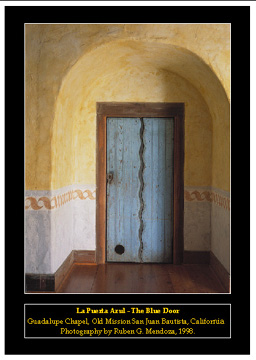
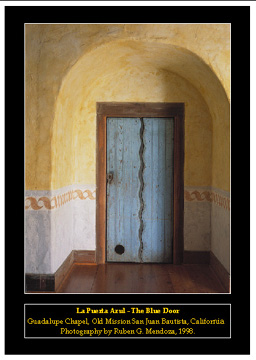

Exhibition mailer sponsored by
the California Missions Foundation.
Photo Copyright Ruben G. Mendoza,
1998.

Exhibition mailer sponsored by
the California Missions Foundation.
Photo Copyright Ruben G. Mendoza,
1998.
"San Juan Bautista: An Archaeologist's View
of an Early California Mission"
Mexican
Heritage Plaza, 1700 Alum Rock Avenue, San Jose, California -- July
9th through September 15th, 2002:
Twenty-one color prints from medium format transparencies printed in
16" x 20" and 20" x 30" formats. Includes detailed captions pertaining
to the art and architecture of the early Hispanic colonial mission of San
Juan Bautista, Alta California. This exhibition was sponsored by
the California Missions Foundation and the CSU Monterey Bay Institute of
Archaeology. A full color mailer and black and white exhibition catalog
accompany this collection. The image at the top of this page is but
one example of the images from the exhibition.
The exhibition is being featured in the Community Theater Lobby of the
Mexican Heritage Plaza located at 1700 Alum Rock Avenue in San Jose, California.
For further information, contact Laura Esparza, the Director of Programs
at the Mexican Heritage Corporation. See http://www.mhcviva.org/
for further information on the Plaza; and http://www.mhcviva.org/directions.html
for further information on its location.
Because I am planning on moving the exhibition to a new venue after the
run at the Mexican Heritage Plaza, if your institution is interested in
hosting the exhibition, please contact me at your earliest convenience
at the voice mail address noted below.
From the Exhibition Mailer:
The exhibition "San Juan Bautista: An Archaeologist's
View of an Early California Mission" was made possible through a grant
from The California Missions Foundation, San Francisco, California.
The Foundation is dedicated to the preservation, protection & maintenance
of the California Missions.
See www.missionsofcalifornia.org
for further information on how you can help.
See enlarged versions of images from the Exhibition Mailer sponsored by the California Missions Foundation: "La Puerta Azul" and "La Pila del Bautismo" (Copyright © Ruben G. Mendoza, 1998, 2002. All Rights Reserved.)